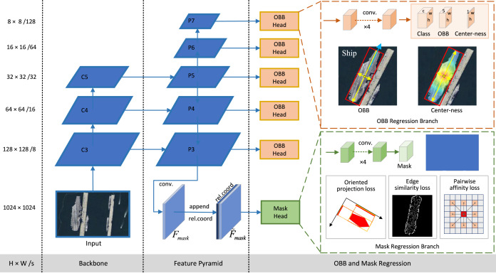
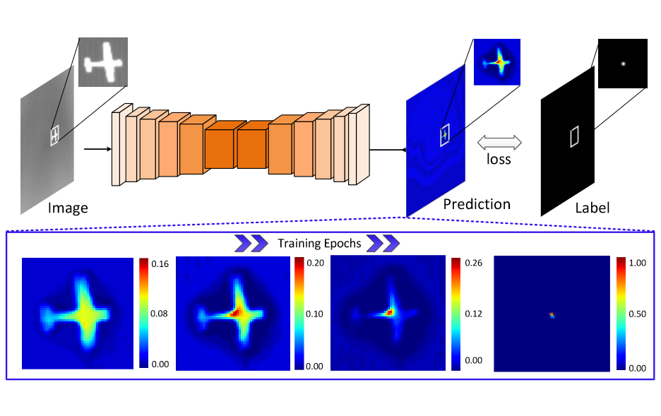
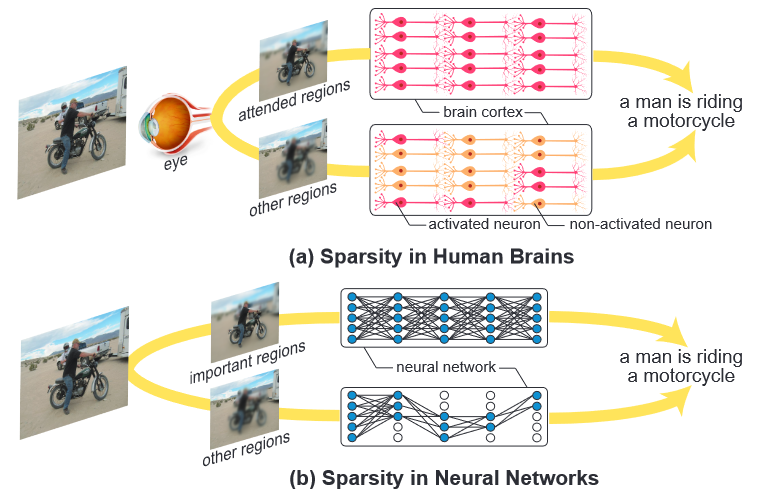
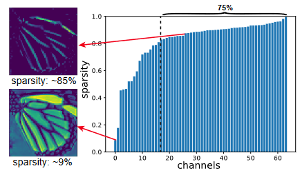
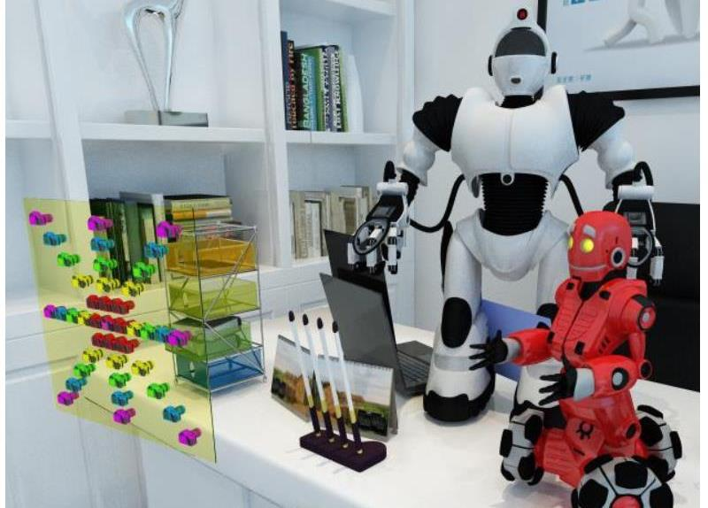
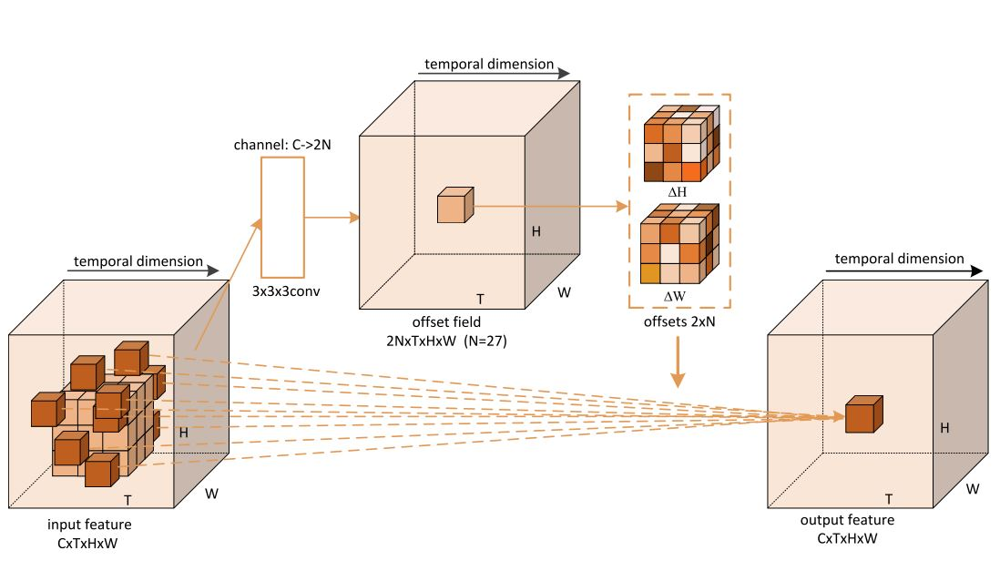
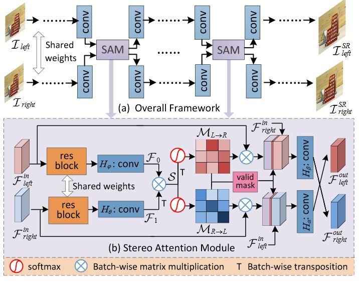

Xinyi Ying (应昕怡)
Ph.D Candidate
Research Gate |
Github |
Google Scholar
National University of Defense Technology (NUDT)
Email: yingxinyi18@nudt.edu.cn
Brief Bio
I received my Master degree from Master degrees from NUDT in 2018. Currently, I'm a PHD student with the College of Electronic Science and Technology, NUDT. My research interests focus on optical imaging and detection, particularly on
infrared small target detection and weakly supervised semantic segmentation.
Publications --- 2024

OBBInst: Remote sensing instance segmentation with oriented bounding box supervision
Xu Cao, Huanxin Zou, Jun Li, Xinyi Ying, Shitian He
JAG, 2024.
| Paper
Publications --- 2023


Learning scalable dynamic filter in convolutional networks
Shuanglin Wu, Chao Xiao, Xinyi Ying, Longguang Wang, Jungang Yang, Wei An
IEEE PRL, 2023.
| Paper
Publications --- 2022


Publications --- 2021



Exploring Sparsity in Image Super-Resolution for Efficient Inference
Longguang Wang, Xiaoyu Dong, Yingqian Wang, Xinyi Ying, Zaiping Lin, Wei An, Yulan Guo
CVPR, 2021.
DSFNet: Dynamic and static fusion network for moving object detection in satellite videos
Chao Xiao, Qian Yin, Xinyi Ying, Ruojing Li, Shuanglin Wu, Miao Li, Li Liu, Wei An, Zhijie Chen
GRSL, 2021.
| Paper
Channelmix: A mixed sample data augmentation strategy for image classification
Xu Cao, HuanXin Zou, XinYi Ying, RunLin Li, ShiTian He, Fei Cheng
CBFD, 2021.
| Paper
Double-triplet-pseudo-Siamese architecture for remote sensing aircraft target recognition
Xu Cao, HuanXin Zou, XinYi Ying, RunLin Li, ShiTian He, Fei Cheng
ICSP, 2021.
| Paper
Using Bilinear-Siamese architecture for remote sensing scene classification
Xu Cao, HuanXin Zou, XinYi Ying, RunLin Li, ShiTian He, Fei Cheng
AIID, 2021.
| Paper
Publications --- 2020



Academic Services
Challenge Organization:
Wide Area Infrared Small Target Detection Challenge @ PRCV 2024,
Resourse-Limited Infrared Small Target Detection Challenge @ ICPR 2024,
Reviewer:
IEEE Transactions on Circuits and Systems for Video Technology
IEEE Transactions on Geoscience and Remote Sensing
IEEE International Journal of Applied Earth Observation and Geoinformation
IEEE Signal Processing Letter
IEEE International Joint Conference on Neural Networks
IEEE International Conference on Pattern Recognition
IEEE International Conference on Image Processing
IEEE Access
Pattern Recognition Letters
IET Computer Vision
IET Image Processing
IEEE Computer Graphics and Applications
Chinese Conference on Pattern Recognition and Computer Vision
Multimedia Systems
Mathematical Biosciences and Engineering
......
Wide Area Infrared Small Target Detection Challenge @ PRCV 2024,
Resourse-Limited Infrared Small Target Detection Challenge @ ICPR 2024,
Reviewer:
IEEE Transactions on Circuits and Systems for Video Technology
IEEE Transactions on Geoscience and Remote Sensing
IEEE International Journal of Applied Earth Observation and Geoinformation
IEEE Signal Processing Letter
IEEE International Joint Conference on Neural Networks
IEEE International Conference on Pattern Recognition
IEEE International Conference on Image Processing
IEEE Access
Pattern Recognition Letters
IET Computer Vision
IET Image Processing
IEEE Computer Graphics and Applications
Chinese Conference on Pattern Recognition and Computer Vision
Multimedia Systems
Mathematical Biosciences and Engineering
......
Teaching Assistance
Lecture: Signals and Systems (Spring Term, 2022)
Lecture: Signals and Systems (Autumn Term, 2021)
Lecture: Signals and Systems (Spring Term, 2020)
Lecture: Target Detection and Signal Processing (Autumn Term, 2019)
Lecture: Target Detection and Signal Processing (Autumn Term, 2018)
Lecture: Signals and Systems (Autumn Term, 2021)
Lecture: Signals and Systems (Spring Term, 2020)
Lecture: Target Detection and Signal Processing (Autumn Term, 2019)
Lecture: Target Detection and Signal Processing (Autumn Term, 2018)
Awards & Honors
2023 | Best Paper of China Society of Image and Graphics (LESPS CVPR)
2022 | Second-class Scholarship of NUDT
2022 | Outstanding Master Dissertation Award of NUDT
2022 | Outstanding Master Dissertation Award of NUDT
2022 | Excellent Student of NUDT
2021 | Excellent Student of NUDT
2022 | Second-class Scholarship of NUDT
2022 | Outstanding Master Dissertation Award of NUDT
2022 | Outstanding Master Dissertation Award of NUDT
2022 | Excellent Student of NUDT
2021 | Excellent Student of NUDT
Last updated: 2024-04-14